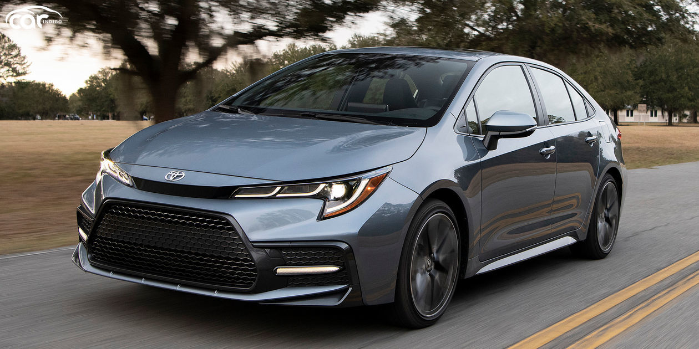
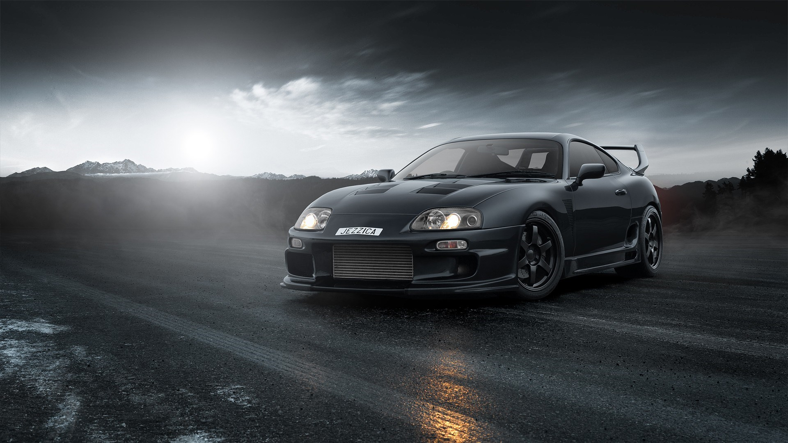

Sejarah dan Perkembangan
Toyota Motor Corporation didirikan pada September 1933 sebagai divisi mobil Pabrik Tenun Otomatis Toyoda. Divisi mobil perusahaan tersebut kemudian dipisahkan pada 28 Agustus 1937 untuk menciptakan Toyota Motor Corporation seperti saat ini.
Berangkat dari industri tekstil, Perusahaan yang memproduksi 1 mobil tiap 50 menit ini ternyata menggunakan penamaan Toyota lebih karena penyebutannya lebih enak daripada memakai nama keluarga pendirinya, Toyoda. Inilah beberapa tonggak menarik perjalanan Toyota.
Tahun Awal (1930-an - 1940-an):
tahun 1933, ketika Toyoda membangun divisi otomotif, tim yang kemudian banyak dikendalikan oleh anaknya Kiichiro Toyoda, tiada henti menghasilkan inovasi-inovasi terdepan di zamannya. Mesin Tipe A berhasil dirampungkan pada 1934. Setahun kemudian mesin ini dicangkokkan prototipe pertama mobil penumpang mereka, A1. Divisi otomotif Toyoda juga menghasilkan truk model G1.
Pada tahun 1936 mereka meluncurkan mobil penumpang pertama mereka, Toyoda AA (kala itu masih menggunakan nama Toyoda). Model ini dikembangkan dari prototipe model A1 dan dilengkapi bodi dan mesin A. Kendaraan ini dari awal diharapkan menjadi mobil rakyat.
Replika Toyota Model AA
Empat tahun menunggu dirasa cukup melahirkan perusahaan otomotif sendiri dan melepaskan diri dari industri tekstil mereka. Kemudian tahun 1937 mereka meresmikan divisi otomotif dan memakai nama Toyota, bukan Toyoda seperti nama industri tekstil. Pengambilan nama Toyota dalam bahasa Jepang terwakili dalam 8 karakter, dan delapan adalah angka keberuntungan bagi kalangan masyarakat Jepang. Alasan lain yang dianggap masuk akal adalah industri otomotif merupakan bisnis gaya hidup dan bahkan penyebutan sebuah nama (dan seperti apa kedengarannya), menjadi sisi yang begitu penting. Karena nama Toyoda dianggap terlalu kaku di dalam bisnis yang dinamis sehingga diubah menjadi Toyota yang dirasa lebih baik. Tak ayal, tahun 1937 merupakan era penting kelahiran Toyota Motor Co, Ltd. cikal bakal raksasa Toyota Motor Corp (TMC) sekarang. Dan pada tahun 1938, didirikan Koromo Plant di Jepang (sekarang bernama Honsha plant) yang merupakan Toyota's Establishment Exhibit Room. Plant ini disusun berdasarkan teori Just In Time dan dilengkapi dengan berbagai fasilitas seperti asrama, rumah sakit, dan toko.
Semangat inovasi Kiichiro Toyoda tidak pernah redup. Toyota kemudian berkembang menjadi penghasil kendaraan tangguh. Di era 1940-an, Toyota sibuk mengembangkan permodalan termasuk memasukkan perusahaan di lantai bursa di Tokyo, Osaka dan Nagoya. Pada tahun 1947, penjualan mobil Toyota di dalam negeri sudah mencapai 100.000 kendaraan.
Tahun 1950-an - 1960-an:
Setelah era Perang Dunia II berakhir, tahun 1950-an merupakan pembuktian Toyota sebagai penghasil kendaraan serba guna tangguh. Waktu itu kendaraan Jeep akrab di Jepang. Terinspirasi dari mobil ini, Toyota kemudian mengembangkan prototipe Land Cruiser yang keluar tahun 1950. Pada tahun yang sama pula Toyota mendirikan Toyota Motor Sales co., Ltd, anak perusahaan Toyota Motor Co., Ltd yang menangani penjualan, pemasaran dan distribusi Toyota. Setahun kemudian meluncurkan secara resmi model awal Land Cruiser yakni model BJ.
Bulan Juli tahun itu, test drivernya Ichiro Taira mengakhiri uji coba dengan hasil luar biasa. Diinspirasi oleh tokoh Samurai Heikuro Magaki yang mendaki Gunung Atago di atas kuda tahun 1643, Taira mengemudikan Toyota BJ-nya ke kuil Fudo di kota Okasaki. Ini sekaligus dipakai sebagai promosi ketangguhan mobil segala medan ini. Tak lama berselang, Toyota Land Cruiser mulai menandingi dominasi Jeep Willys. Bahkan dengan model-model selanjutnya, Toyota Land Cruiser bisa diterima di pasar yang kala itu sulit ditembus yakni Amerika Utara. Lewat model ini, Toyota masuk ke pasar-pasar di berbagai belahan dunia, Termasuk di Indonesia yang dikenal sebagai sebagai Toyota Hardtop Land Cruiser FJ40/45. Di Afrika, model-model Toyota Land Cruiser ini digunakan sebagai Technical alias jip bersenjata yang dibekali senapan mesin ringan, berat atau bahkan senjata basoka tanpa tolak balik (Recoilless bazooka) dan diterjunkan sepanjang konflik-konflik bersenjata dengan kinerja sangat tangguh.
Toyota Land Cruiser FJ40
Toyota tidak hanya dikenal melalui Toyota Land Cruiser. Mereka juga mengembangkan model yang menjadi favorit dunia, sedan kecil. Pada tahun 1961, Toyota mengeluarkan model Publica dan lima tahun kemudian meluncurkan model Corolla. Lewat Toyota Corolla yang memulai debutnya pada tahun 1966, sedan mungil generasi awal ini memakai penggerak belakang mengubah tatanan sedan bongsor yang populer saat itu menuju arah sedan kecil yang kompak, irit dan ringkas.
Toyota Corolla Generasi Pertama
Tahun 1970-an - 1980-an:
Memasuki tahun 1975, Corolla masuk dalam generasi ketiga dan terjual lebih dari 5 juta unit. Hal yang menakjubkan ini masih kokoh hingga sekarang. Mesin mobil Corolla ini kemudian digunakan di Indonesia sebagai mesin untuk kendaraan niaga keluarga serbaguna, Toyota Kijang generasi awal yang dikenal sebagai Kijang Buaya.
Kijang Buaya
Sejalan makin mengglobalnya produk Toyota, mereka sadar tidak mempunyai grafik logo. Bahkan di Indonesia dijumpai kendaraan bermerk Toyota seperti Toyota Kijang dengan logo TOYOTA pada grill di bagian bonnet (hidung) mobil. Pada tahun 1989 Toyota akhirnya memutuskan untuk membuat dua lingkaran oval (elips) yang menghasilkan huruf T dan ellips ketiga mengisyaratkan akan the spirit of understanding in design. Lingkaran ketiga itu sekaligus mengelilingi kedua lingkaran ellips sebelumnya yang berbentuk T itu sebagai bukti menjaga dan memengaruhi sekelilingnya.
Tahun 1990-an - 2000-an
Pada awal 1990-an, Toyota telah tumbuh menjadi salah satu perusahaan otomotif terbesar di dunia, dan terus memperluas jangkauannya di pasar internasional. Di Jepang, Toyota menghadapi situasi ekonomi yang sulit setelah gelembung ekonomi Jepang pecah pada akhir 1980-an, namun mereka tetap fokus pada inovasi dan pengembangan teknologi.
Salah satu pencapaian terbesar Toyota pada 1990-an adalah pengembangan dan peluncuran teknologi hybrid. Pada tahun 1997, Toyota memperkenalkan Toyota Prius, mobil hybrid pertama di dunia yang diproduksi massal. Prius menjadi simbol dari komitmen Toyota terhadap efisiensi bahan bakar dan keberlanjutan lingkungan. Langkah ini menunjukkan visi Toyota terhadap masa depan industri otomotif, yaitu mobil yang lebih ramah lingkungan dan hemat energi.
Toyota Prius generasi pertama
Toyota Prius tidak hanya sukses di Jepang, tetapi juga secara bertahap mendapatkan pengakuan di pasar internasional, terutama setelah masuk ke pasar Amerika Serikat pada tahun 2000-an. Prius membuka jalan bagi pengembangan mobil hybrid di industri otomotif global dan memposisikan Toyota sebagai pemimpin dalam inovasi ramah lingkungan.
Pada akhir era 90-an, Toyota semakin fokus pada ekspansi global, terutama di Amerika Serikat, Eropa, dan Asia. Di Amerika, Toyota terus memperluas produksi lokalnya dengan membangun lebih banyak pabrik. Mereka juga memperkenalkan lebih banyak model yang dirancang khusus untuk pasar Amerika, seperti Toyota Tundra (1999), truk pickup ukuran penuh yang bersaing dengan merek-merek domestik seperti Ford dan Chevrolet.
Toyota Tundra generasi pertama
Selain itu, Toyota juga memperkuat posisinya di pasar Eropa dengan membuka lebih banyak fasilitas produksi di sana. Mereka meluncurkan model yang lebih sesuai dengan selera Eropa, seperti Toyota Yaris (diluncurkan pada 1999) yang sukses di segmen mobil kecil.
Toyota Yaris generasi pertama
Memasuki tahun 2000-an, Toyota telah mencapai banyak hal. Mereka tidak hanya menjadi salah satu produsen mobil terbesar di dunia, tetapi juga pemimpin dalam inovasi teknologi. Salah satu tonggak penting adalah keberhasilan Toyota dalam mencatat rekor penjualan global dan keuntungan besar.
Pada awal dekade, Toyota terus memanfaatkan tren mobil hybrid dan teknologi ramah lingkungan. Generasi kedua Toyota Prius yang diluncurkan pada tahun 2003 semakin memperkuat dominasi Toyota dalam segmen ini dan menciptakan revolusi dalam kesadaran lingkungan di industri otomotif. Prius menjadi ikon budaya dan diterima luas oleh masyarakat global.
Toyota Prius 2003
Toyota menjaga reputasinya sebagai pembuat mobil yang andal dan tahan lama, yang membuat banyak konsumen di seluruh dunia mempercayai produk mereka. Namun, pada akhir 2000-an, Toyota menghadapi tantangan besar ketika terjadi beberapa masalah terkait penarikan kembali produk karena masalah keamanan, yang merusak citra kualitas mereka di Amerika Serikat.
Pada akhir 2000-an, Toyota telah berhasil memantapkan diri sebagai produsen mobil nomor satu di dunia, bersaing ketat dengan General Motors dan Volkswagen dalam hal penjualan global. Keberhasilan mereka terutama didorong oleh inovasi dalam teknologi, ekspansi global, dan kualitas produk mereka. Meskipun menghadapi tantangan, seperti krisis penarikan kembali, Toyota tetap menjadi kekuatan dominan dalam industri otomotif dan simbol inovasi, efisiensi, serta keberlanjutan.
Model Mobil Terkenal
Sebagai salah satu perusahaan otomotif terbesar di dunia, Toyota telah melahirkan berbagai model mobil yang tidak hanya populer di kalangan konsumen tetapi juga membawa dampak besar terhadap industri otomotif secara global. Dari mobil keluarga yang andal, truk yang tangguh di segala medan, kendaraan ramah lingkungan, hingga mobil perfoma yang ikonik.
1. Toyota Corolla: Simbol Keandalan dan Mobilitas Global
Toyota Corolla adalah salah satu model Toyota yang paling ikonik dan merupakan model mobil terlaris sepanjang sejarah. Pertama kali diperkenalkan pada tahun 1966, Corolla telah melalui berbagai evolusi desain dan teknologi, menjadikannya mobil yang terus relevan di berbagai era. Keberhasilan Corolla dapat dilihat dari angka penjualan global yang mencapai lebih dari 44 juta unit di seluruh dunia, menjadikannya mobil terlaris sepanjang masa.
Salah satu faktor utama di balik kesuksesan global Toyota Corolla adalah reputasinya yang dikenal sebagai mobil yang andal dan tahan lama. Corolla tidak hanya menjadi pilihan bagi konsumen karena harganya yang terjangkau, tetapi juga karena terkenal dengan biaya perawatan yang rendah dan ketahanannya dalam penggunaan jangka panjang. Banyak pemilik Corolla melaporkan bahwa mobil ini mampu bertahan lebih dari 200.000 hingga 300.000 kilometer tanpa mengalami masalah besar, menjadikannya investasi yang sangat berharga bagi banyak keluarga.
Keandalan Corolla juga membuatnya sangat populer di negara-negara berkembang, di mana infrastruktur jalan sering kali buruk dan biaya perawatan menjadi faktor penting dalam memilih kendaraan. Toyota merancang Corolla dengan fokus pada ketangguhan, sehingga mampu bertahan di berbagai kondisi jalan dan cuaca ekstrem. Di negara-negara seperti Afrika Selatan, India, dan Brasil, Corolla menjadi simbol mobil yang bisa diandalkan untuk menghadapi kondisi-kondisi berat sehari-hari.
Seiring dengan berkembangnya industri otomotif, Toyota juga terus berinovasi untuk menjaga relevansi Corolla di pasar yang semakin kompetitif. Salah satu aspek utama yang terus ditingkatkan oleh Toyota adalah teknologi keselamatan. Toyota Safety Sense, yang mencakup fitur-fitur canggih seperti sistem pencegahan tabrakan (Pre-Collision System), pengereman darurat otomatis, kontrol jalur (Lane Departure Alert), dan adaptive cruise control, kini menjadi standar di hampir semua varian Corolla modern.
Selain itu, Corolla juga menawarkan teknologi hiburan dan kenyamanan terkini seperti layar sentuh infotainment, konektivitas smartphone, dan sistem navigasi canggih. Fitur-fitur ini menjadikan Corolla tidak hanya sebagai mobil yang andal, tetapi juga nyaman dan menyenangkan untuk dikendarai.
Toyota juga terus memperhatikan aspek efisiensi bahan bakar dalam setiap generasi Corolla. Seiring dengan meningkatnya kesadaran global terhadap isu lingkungan, Toyota telah mengembangkan varian Corolla Hybrid yang menggunakan teknologi hybrid untuk memberikan efisiensi bahan bakar yang lebih baik tanpa mengorbankan performa. Ini adalah bagian dari komitmen Toyota terhadap keberlanjutan lingkungan dan pengurangan emisi karbon di sektor transportasi.

Corolla Hybrid keluaran tahun 2021
2. Toyota Hilux: Ketangguhan Legendaris di Dunia Otomotif
Toyota Hilux adalah salah satu model truk pikap paling terkenal dan legendaris yang pernah diproduksi oleh Toyota. Diluncurkan pertama kali pada tahun 1968, Hilux dengan cepat mendapatkan reputasi sebagai kendaraan yang tangguh, andal, dan mampu bertahan di berbagai kondisi ekstrem. Dengan desain yang sederhana namun efisien, Hilux telah menjadi pilihan utama bagi konsumen di seluruh dunia yang membutuhkan kendaraan yang kuat untuk keperluan sehari-hari maupun untuk bekerja di medan berat. Selama beberapa dekade, Hilux telah melalui banyak perubahan dan peningkatan, tetapi satu hal yang tetap konsisten adalah ketangguhannya yang tak tertandingi.
Toyota Hilux sangat terkenal adalah karena ketangguhannya yang legendaris di berbagai kondisi ekstrem. Dari pegunungan di Amerika Selatan hingga padang pasir di Afrika, Hilux telah membuktikan kemampuannya di seluruh dunia. Di banyak negara berkembang, Hilux dianggap sebagai kendaraan utama untuk kegiatan sehari-hari, baik untuk transportasi, pengangkutan barang, maupun sebagai kendaraan militer.

Hilux dikenal sebagai kendaraan yang tahan banting. Salah satu momen yang semakin mengukuhkan reputasi ketangguhan Hilux adalah ketika acara televisi Inggris, Top Gear, melakukan serangkaian tes ekstrem pada model Hilux tahun 1988. Dalam episode tersebut, Hilux dijatuhkan dari ketinggian, ditenggelamkan di laut, dan dihancurkan oleh reruntuhan gedung. Meskipun rusak parah, Hilux tetap bisa dihidupkan dan berjalan. Uji coba ini menegaskan Hilux sebagai salah satu kendaraan paling tangguh yang pernah dibuat.
Hilux setelah jatuh oleh reruntuhan gedung
3. Toyota Land Cruiser: Legenda di Dunia Off-Road
Toyota Land Cruiser adalah salah satu model kendaraan yang paling legendaris dan dihormati dalam sejarah otomotif. Dikenal sebagai simbol ketangguhan dan keandalan, Land Cruiser telah memenangkan hati banyak penggemar off-road dan pengguna yang mencari kendaraan tangguh yang bisa diandalkan dalam kondisi ekstrem. Sejak pertama kali diperkenalkan pada tahun 1951, Land Cruiser terus mengalami evolusi, menghadirkan teknologi terbaru tanpa mengorbankan kemampuan dasarnya sebagai kendaraan yang dapat bertahan di berbagai medan, dari jalan raya hingga gurun pasir dan pegunungan yang terjal.
Land Cruiser dirancang untuk menghadapi kondisi jalan yang sulit dan tidak terduga, seperti pegunungan berbatu, hutan belantara, gurun pasir, serta jalan yang tertutup salju atau lumpur. Fitur-fitur seperti penggerak empat roda (4WD), suspensi tangguh, serta sasis ladder frame yang kokoh menjadikannya pilihan utama untuk eksplorasi medan berat. Land Cruiser sering digunakan di berbagai daerah terpencil di seluruh dunia, di mana kendaraan biasa mungkin tidak mampu bertahan. Dari gurun Sahara di Afrika hingga pegunungan Himalaya, Land Cruiser telah membuktikan kemampuannya sebagai kendaraan yang dapat diandalkan dalam situasi yang paling menantang. Tidak mengherankan jika Land Cruiser sering menjadi kendaraan pilihan untuk misi-misi kemanusiaan, penelitian, dan eksplorasi di daerah-daerah yang sulit dijangkau.
Meskipun Toyota Land Cruiser telah dikenal sebagai kendaraan yang sangat tangguh, Toyota juga berkomitmen untuk menjaga Land Cruiser tetap relevan di era modern. Dengan perkembangan teknologi otomotif, terutama terkait dengan keberlanjutan dan efisiensi energi, Toyota telah mulai memperkenalkan inovasi baru pada Land Cruiser. Toyota berencana untuk mengembangkan varian hybrid dan memperkenalkan teknologi ramah lingkungan pada generasi berikutnya, sejalan dengan komitmen global mereka untuk mengurangi emisi karbon. Namun, meskipun berinovasi, Toyota tetap berpegang pada filosofi dasar Land Cruiser: kendaraan yang tangguh dan mampu bertahan di segala kondisi. Ini menunjukkan bahwa meskipun Land Cruiser akan mengalami perubahan dalam teknologi dan desain, ia akan tetap mempertahankan karakteristik inti yang menjadikannya pilihan utama bagi para petualang, pekerja, dan organisasi di seluruh dunia.
4. Toyota Prius: Pelopor Revolusi Kendaraan Ramah Lingkungan
Toyota Prius adalah kendaraan hibrida pertama di dunia yang diproduksi secara massal dan menjadi simbol dari revolusi teknologi ramah lingkungan di industri otomotif. Diluncurkan pertama kali pada tahun 1997, Prius telah mendefinisikan ulang konsep efisiensi bahan bakar dan emisi karbon yang lebih rendah, menjadikannya pelopor dalam pengembangan kendaraan hemat energi. Dengan lebih dari dua dekade inovasi dan pengembangan, Prius tidak hanya menjadi ikon di segmen hibrida, tetapi juga mempengaruhi kebijakan lingkungan dan perubahan industri secara global.
Salah satu fitur utama yang membuat Toyota Prius begitu revolusioner adalah sistem Hybrid Synergy Drive (HSD), yang menggabungkan dua sumber daya tenaga: mesin bensin konvensional dan motor listrik. Sistem ini memungkinkan kendaraan untuk beralih antara menggunakan tenaga bensin, listrik, atau kombinasi keduanya, tergantung pada kebutuhan pengemudi dan kondisi berkendara. Baterai listrik yang digunakan pada Prius secara otomatis terisi saat kendaraan melambat atau berhenti, memanfaatkan energi kinetik yang biasanya hilang selama pengereman. Teknologi ini tidak hanya mengurangi konsumsi bahan bakar, tetapi juga meminimalkan emisi gas rumah kaca. Dalam mode listrik murni, Prius dapat beroperasi tanpa menghasilkan emisi langsung, menjadikannya kendaraan yang sangat cocok untuk penggunaan perkotaan, di mana polusi udara merupakan masalah yang signifikan.
Keberhasilan teknologi HSD telah membentuk fondasi untuk pengembangan kendaraan hibrida lainnya, baik di dalam lini produk Toyota maupun oleh produsen mobil lainnya. Prius membuka jalan bagi kendaraan hibrida dan listrik yang sekarang menjadi bagian integral dari pasar otomotif global.
5. Toyota Supra: Ikon Mobil Sport Jepang yang Mendunia

Toyota Supra adalah salah satu model mobil sport paling legendaris di dunia otomotif. Sejak pertama kali diperkenalkan pada tahun 1978, Supra telah menjadi simbol performa tinggi, desain aerodinamis, dan keandalan teknologi. Sebagai mobil yang menggabungkan kekuatan mesin besar, handling yang presisi, dan desain yang memukau, Toyota Supra telah memenangkan hati penggemar mobil sport di seluruh dunia, dari jalanan perkotaan hingga lintasan balap. Generasi demi generasi, Supra tidak hanya mempertahankan reputasinya sebagai salah satu mobil sport terbaik, tetapi juga berkembang menjadi ikon budaya otomotif, terutama setelah popularitasnya melonjak melalui berbagai media seperti film dan video game.
Toyota Supra lahir sebagai evolusi dari model Toyota Celica, yang pada masa itu sudah cukup populer sebagai mobil sport. Generasi pertama Toyota Supra, yang dikenal sebagai Toyota Celica Supra (A40), diluncurkan pada tahun 1978. Mobil ini didesain sebagai varian lebih besar dan lebih kuat dari Celica, dengan menggunakan mesin inline-six (enam silinder segaris) yang lebih bertenaga. Mesin ini merupakan salah satu karakteristik utama Supra, yang menjadi simbol dari kemampuan performa mobil ini di masa-masa awal.
Supra generasi pertama menawarkan perpaduan unik antara kenyamanan berkendara dan performa yang responsif, menjadikannya pilihan yang ideal bagi penggemar mobil sport yang mencari kendaraan serba guna. Meskipun awalnya belum diakui sebagai mobil sport "hardcore," Supra mulai menarik perhatian karena keseimbangan yang ditawarkannya antara kekuatan, kenyamanan, dan keandalan.
Seiring berkembangnya waktu, Toyota Supra mengalami sejumlah perubahan signifikan, baik dari segi desain maupun performa. Generasi kedua Supra (A60) diluncurkan pada tahun 1981, dengan desain yang lebih agresif dan performa yang lebih baik. Model ini juga memperkenalkan penggerak roda belakang (RWD), yang semakin meningkatkan reputasinya sebagai mobil sport. Supra A60 juga dilengkapi dengan teknologi baru seperti rem cakram di keempat roda dan sistem suspensi independen, menjadikannya kendaraan yang tangguh dan siap menghadapi berbagai tantangan jalan.
Namun, popularitas Supra benar-benar melonjak ketika generasi ketiga (A70) dirilis pada tahun 1986. Toyota Supra A70 menandai era baru bagi Supra, karena pada saat inilah mobil ini sepenuhnya memisahkan diri dari nama Celica, menjadi mobil yang berdiri sendiri. Generasi ketiga Supra ini diperkuat dengan mesin turbocharged yang lebih kuat dan teknologi canggih seperti ABS (Anti-lock Braking System). Dengan tambahan turbo, Supra A70 menawarkan kekuatan hingga 276 tenaga kuda, menjadikannya pesaing serius di pasar mobil sport global.
Puncak dari sejarah Supra datang dengan diperkenalkannya Toyota Supra generasi keempat (A80) pada tahun 1993. A80 menjadi ikon mobil sport Jepang berkat desain yang aerodinamis dan mesin legendaris 2JZ-GTE. Mesin 2JZ-GTE inline-six 3.0 liter turbocharged ini terkenal tidak hanya karena kekuatannya yang mampu mencapai 320 tenaga kuda dalam versi standar, tetapi juga karena kemampuannya untuk di-tune hingga mencapai kekuatan yang jauh lebih besar, membuatnya sangat populer di kalangan modifikator mobil. Supra A80 dikenal karena kemampuannya yang luar biasa di lintasan balap dan drag racing, serta menjadi favorit di kalangan penggemar mobil yang menginginkan potensi performa maksimal.
Supra A80 mengalami lonjakan popularitas global yang luar biasa setelah muncul dalam film "The Fast and the Furious" pada tahun 2001. Dalam film tersebut, karakter Dominic Toretto, yang diperankan oleh Vin Diesel, mengendarai Supra A80 oranye yang telah dimodifikasi secara ekstensif, dan mobil ini menjadi ikon film tersebut. Adegan balapan yang melibatkan Supra ini menjadi salah satu momen paling diingat dalam franchise tersebut, dan meningkatkan status Supra sebagai salah satu mobil sport yang paling diidamkan oleh para penggemar di seluruh dunia.
Toyota Supra di Fast & Furious
Setelah Supra generasi keempat dihentikan produksinya pada tahun 2002, banyak penggemar yang menantikan kembalinya mobil sport legendaris ini. Harapan tersebut akhirnya terwujud pada tahun 2019, ketika Toyota meluncurkan Supra generasi kelima (A90). Berkolaborasi dengan BMW, Toyota mengembangkan Supra A90 yang berbagi platform dengan BMW Z4, namun tetap mempertahankan karakteristik khas Supra.
Supra A90 dibekali dengan mesin B58 inline-six turbocharged dari BMW, yang mampu menghasilkan 382 tenaga kuda. Meskipun ada beberapa kritik terhadap kolaborasi dengan BMW, Supra A90 tetap mendapatkan sambutan positif berkat performa impresifnya, kemampuan handling yang luar biasa, serta desain yang modern dan aerodinamis. Supra generasi kelima tetap mempertahankan esensi dari Supra: sebuah mobil sport yang cepat, dinamis, dan mampu memberikan pengalaman berkendara yang mendebarkan. Kombinasi antara teknologi modern dan penghormatan terhadap warisan Supra menjadikan A90 sebagai salah satu mobil sport yang paling diantisipasi dalam beberapa dekade terakhir.
Toyota Supra tidak hanya penting dalam dunia mobil sport, tetapi juga berperan dalam meningkatkan citra Toyota sebagai produsen mobil berkualitas tinggi dan berperforma tinggi. Sebagai bagian dari keluarga besar Toyota, Supra menunjukkan bahwa merek Jepang ini mampu menciptakan kendaraan yang bukan hanya efisien dan dapat diandalkan, tetapi juga mampu bersaing di dunia balap dan performa tinggi.